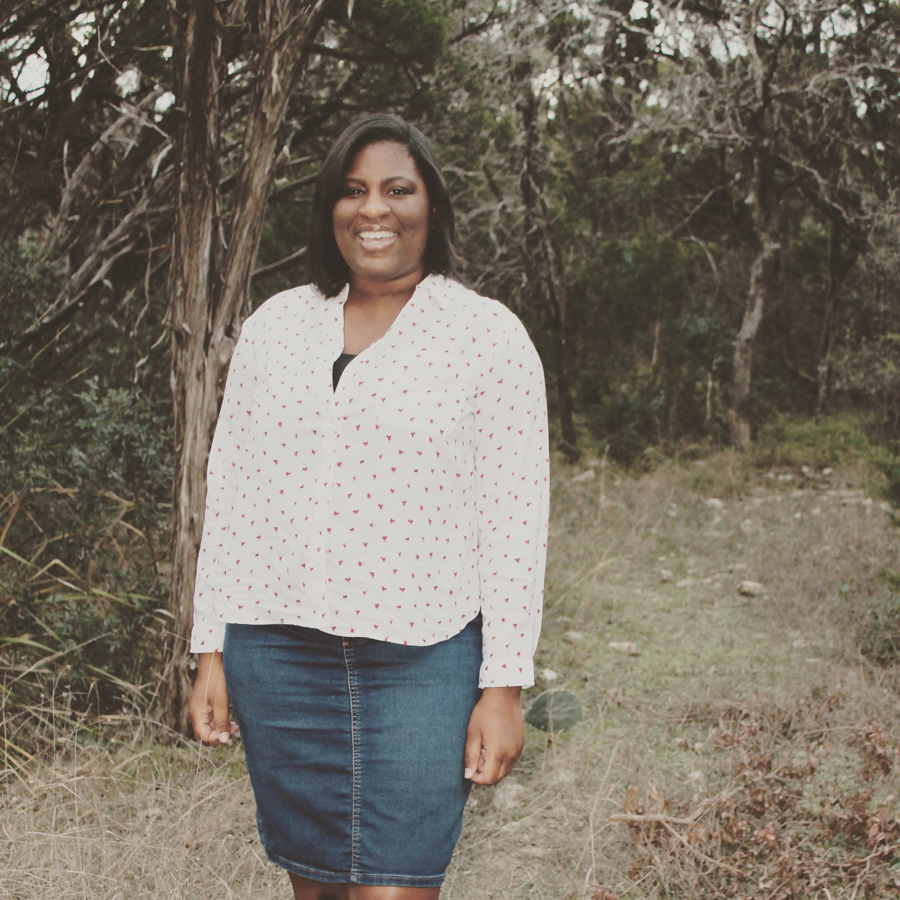
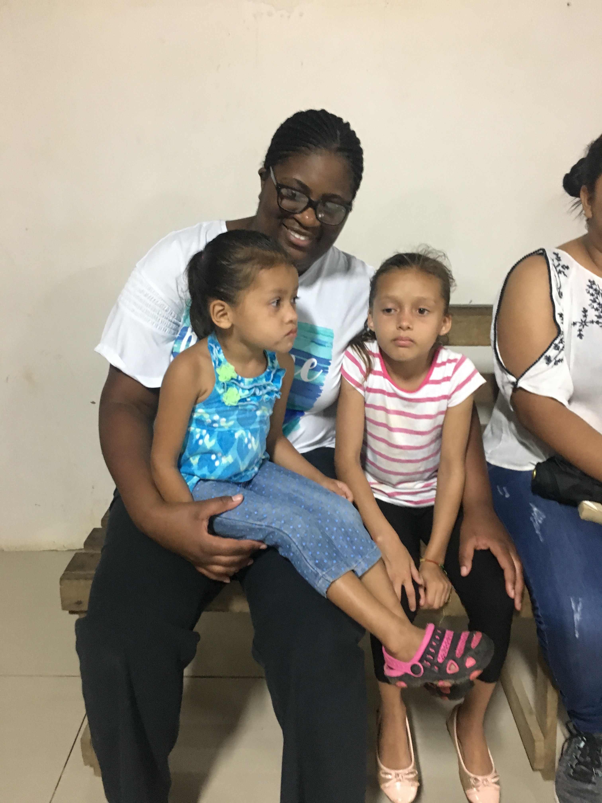
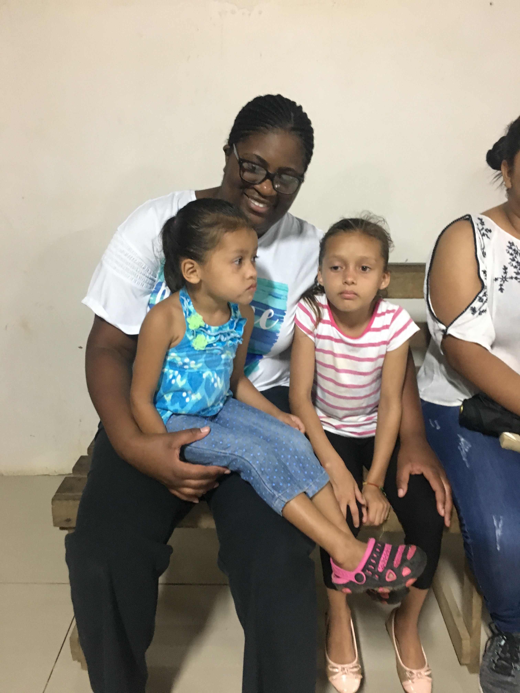

Vacations. Retreats. Family Trips. School closings. We all need rest as human beings, right? Right. Even God rested, not because He really needed it. God wanted to take some time to enjoy all He created. Joyce Meyer pointed this out and I thought it was brilliant. And He wants us to take time out to enjoy life too. We can't enjoy life if we work ourselves to death and never take a moment out to stop and smell the roses. Regrettably, during the last vacation I went on I didn't enjoy it as much as I could have. I went on a cruise with my sister to Central America. I had fun but deep down inside I remember I kept thinking about school that would have been starting up later that month and mostly I was wondering why someone who claimed to be my friend had ignored my messages and would treat me rudely at times in person. This person even encouraged me to message them but never responded and treated me like nothing was wrong in person. I couldn't understand. Instead of taking the opportunity to be disconnected, I took the time to time to worry about my problems. How foolish of me to worry about someone who didn't even have the courtesy to message me back! I constantly worried about what I was doing wrong and what I could do to make it better, even though I was doing nothing wrong, I just wasn't valued. Words are well and good but a person's actions mean everything. If I had truly accepted that concept and backed off I would have been able to push that aside and enjoy my vacation the way I was meant to. You see work doesn't always have to be going to school or to your job. Work can be the mental reeling of your mind, being overly concerned with this and that. We all need a time to let go of our inhibitions and unwind (perhaps this is why God created sleep and a Sabbath day) but sometimes it is necessary to go away for awhile and just completely disconnect for the stresses of everyday life.
Right now, college students are on winter vacation as most universities and colleges are in between semesters and some people are traveling with their families for a post-Christmas trip. Even if you are staying at home, enjoy the time you have off. Watch your favorite positive television shows or movies, sleep in, organize your closet, read a good book etc., do whatever it is to keep your mind from being overly concerned with the "question marks" of life. While I am not suggesting we are to worry even when we are not on break or vacation, when we are on a pause we are supposed to be in a more relaxed state of mind whereas when we are in school or working we are still peaceful but focused on the tasks at hand. Even if you can't afford to go on a vacation, I do suggest taking full advantage of breaks and holidays to disconnect. Sometimes even staying at home for a couple of days can make all the difference in the world. In October my family and I are flying to Los Angeles and going on week long cruise to the Mexican Rivera. What a privilege. I have already made up in my mind that I will experience as much as I can and have as much fun as I can. I believe God is pleased to see His children enjoy themselves. Smile, laugh, enjoy your life and rest! In God's arms as a true believer we are a promised a spiritual rest but sometimes it's okay to pause from the norm and soak it all in. Obedience to God means rest, spiritually (a rest than unbelievers can't have) and in practice as well too from time to time. There remains, then, a Sabbath-rest for the people of God; for anyone who enters God’s rest also rests from their works, just as God did from his. -Hebrews 4:9-10
 
